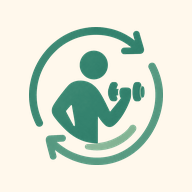

ツヅキン最終更新日 2026年8月5日
本規約は、ツヅキン（以下「本アプリ」）の利用条件を定めるものです。 利用者は、本アプリを利用することで本規約に同意したものとみなされます。
購入の取り消しおよび返金は、Apple または Google の定めに従います。 当方で直接返金の手続きを行うことはできません。 各ストアの購入履歴からお手続きください。
記録および設定は、お使いの端末内にのみ保存されます。詳しくは プライバシーポリシーをご覧ください。 端末の紛失、故障、アプリの削除によるデータの消失について、当方は責任を負いかねます。 設定画面からバックアップを書き出すことができますので、必要に応じてご利用ください。
本アプリは医療、診断、治療を目的としたものではありません。 表示されるメニューは一般的な運動の例であり、個々の身体の状態に合わせたものではありません。
持病がある方、通院中の方、妊娠中の方、体調に不安のある方は、 運動を始める前に必ず医師などの専門家にご相談ください。 運動中に痛みや異常を感じた場合は、ただちに中止してください。 本アプリの利用によって生じた負傷、体調不良その他の損害について、当方は責任を負いかねます。
当方は、利用者への事前の通知なく、本アプリの内容を変更し、または提供を終了することがあります。 これによって生じた損害について、当方は責任を負いかねます。
本規約を変更する場合は、このページを更新します。 変更後も本アプリを利用された場合、変更後の規約に同意したものとみなされます。